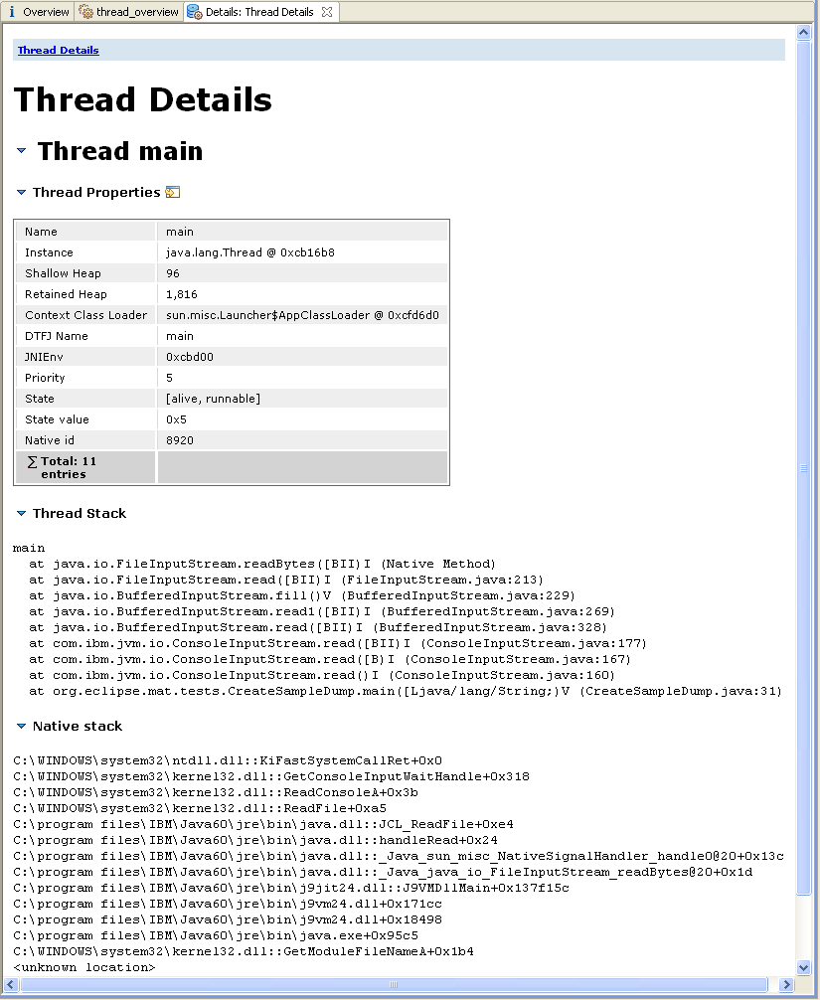
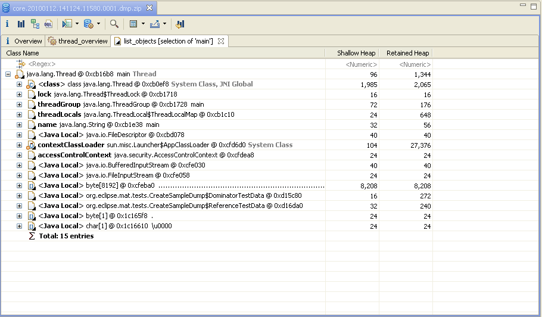
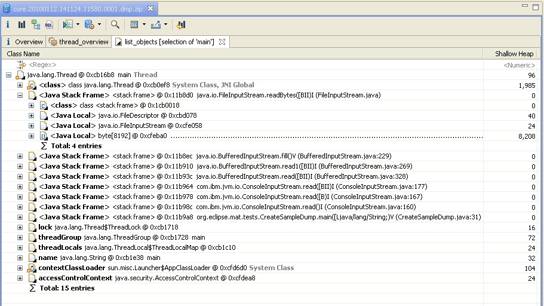
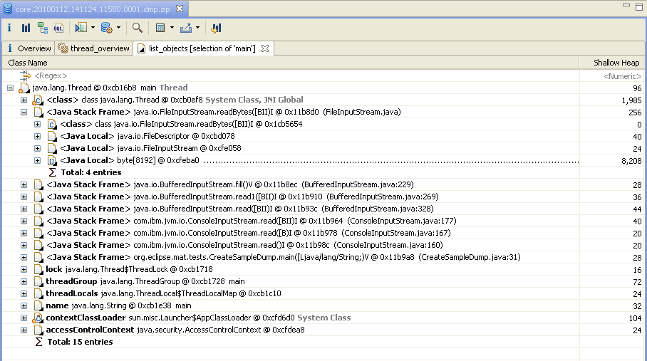
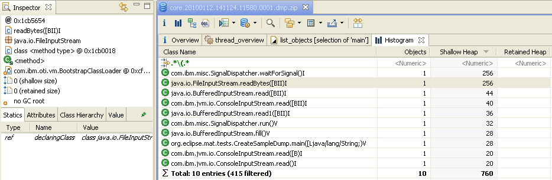
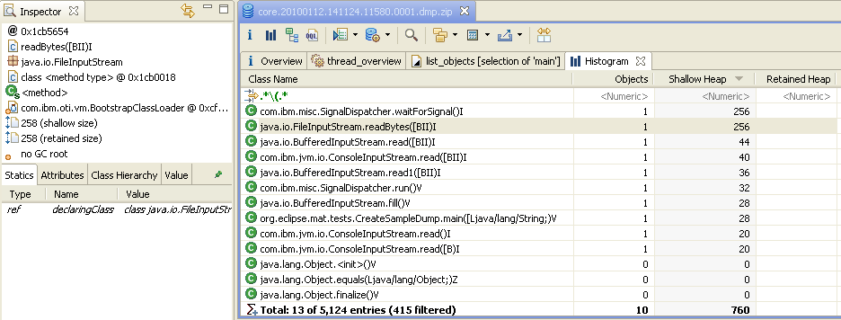

Memory Analyzer provides several queries to inspect the threads at the moment the snapshot was taken.
Threads Overview
To get an overview of all the threads in the heap dump, use the "Thread Overview" button in the toolbar, as shown on the image below. Alternatively one could use the query:

The query provide some properties like thread name, thread object, Context Classloader, and more for each of the threads.
- Select all threads using ctrl+A or command+A
- Expand one level with shift+numpad-plus
- Select all threads and stack frames using ctrl+A or command+A
- Calculate retained size using one of the toolbar items Calculate Minimum Retained Size (quick approx.) or Calculate Precise Retained Size
- Find the far right hand column Retained Size
- Move it to somewhere more convenient by dragging the column header or by clicking on the filter cell, then using shift+up-arrow
- Sort on the column
- Examine the stack frames retaining the most memory
Exploring the call-stacks and the local Java objects is a powerful feature, giving a debugger like capabilities over a snapshot. It allows analyzing in detail the reasons for memory intensive operations. It also allow using Memory Analyzer not only for memory-related problems, but also for a wide range of other problems such as unresponsive applications.
Threads Details
You can proceed with the analysis of a single thread by using the context menu. Memory Analyzer provides an extension point such that extensions can provide semantic information about the thread's activity. The result of the Thread Details query will contain such information (if available), some overview information, and possibly the stacktrace of the thread.
For DTFJ based dumps (IBM system dumps and IBM PHD files with associated java dump) the thread details view gives more information, including the thread state, priority and native stack trace.

Threads Stacks in Dumps from IBM VMs and HPROF Dumps
- Normal
- Stack frames are only shown in the thread stacks view.
- Only stack frames as pseudo-objects
- Stack frames are shown in all views such as paths to GC roots, outbound references from threads, as pseudo-objects. Local variables references in the stack frames are shown as outbound references from the frame. This makes it easy to find which stack frames keep objects alive. For DTFJ, the size of the stack frame is the size on the Java stack, not the heap. HPROF stack frames have zero size.
- Stack frames as pseudo-objects and running methods as pseudo-classes
- Stack frames are shown in all views such as paths to GC roots, outbound references from threads, as pseudo-objects. Local variables references in the stack frames are shown as outbound references from the frame. This makes it easy to find which stack frames keep objects alive. The stack frames are given a pseudo-type depending based on the method which is running in the frame. By viewing the number of instances of that pseudo-type it is easy to see which methods are running across all the threads and which methods use a lot of stack. This can help solve StackOverflowErrors.
- Stack frames as pseudo-objects and all methods as pseudo-classes
- Only available with the DTFJ Parser. Stack frames are shown in all views such as paths to GC roots, outbound references from threads, as pseudo-objects. Local variables references in the stack frames are shown as outbound references from the frame. This makes it easy to find which stack frames keep objects alive. The stack frames are given a pseudo-type depending based on the method which is running in the frame. By viewing the number of instances of that pseudo-type it is easy to see which methods are running across all the threads and which methods use a lot of stack. This can help solve StackOverflowErrors. All other methods are also created as pseudo-class objects. The size of the method pseudo-class object is the size of the byte code and JITted code, which in other modes is accumulated into the size of the defining class. This makes it easy to find methods which consume a lot of non-heap memory for byte code and JITted code.
Normal operation with stack frames not considered as objects.

Stack frames as pseudo-objects.
Note that the type of the stack frame is <stack frame>.

Stack frames as pseudo-objects and running methods as pseudo-classes.
Note the different types for the stack frame such as java.io.FileStream.getBytes([BIII)I;.

The class histogram shows that only running methods are pseudo-classes, and the size of the class object is 0.

Stack frames as pseudo-objects and all methods as pseudo-classes.
The outbound references tree looks the same, but the class histogram has a lot more pseudo-classes with 0 instances (i.e. with no running methods), and the pseudo-class objects have a non-zero size. 